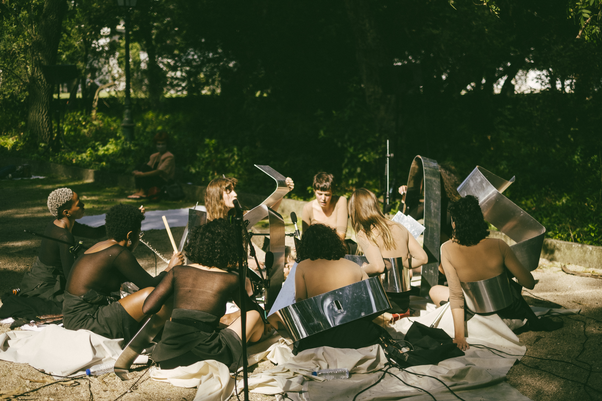
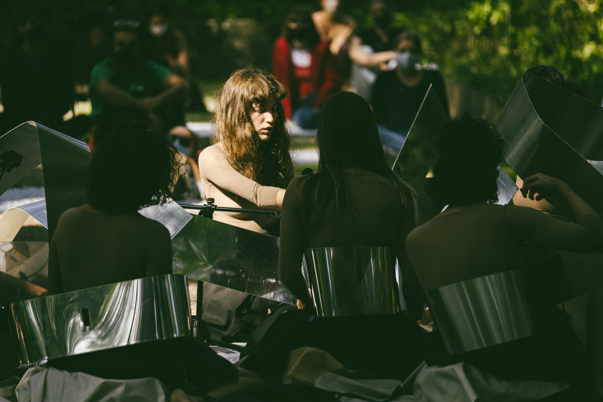
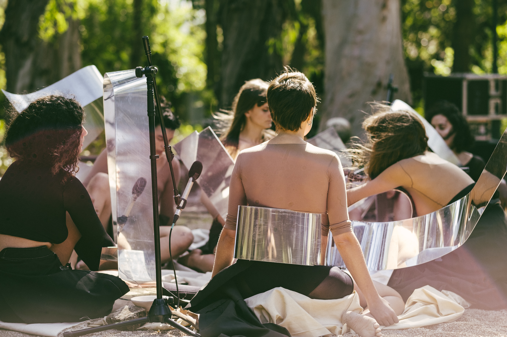
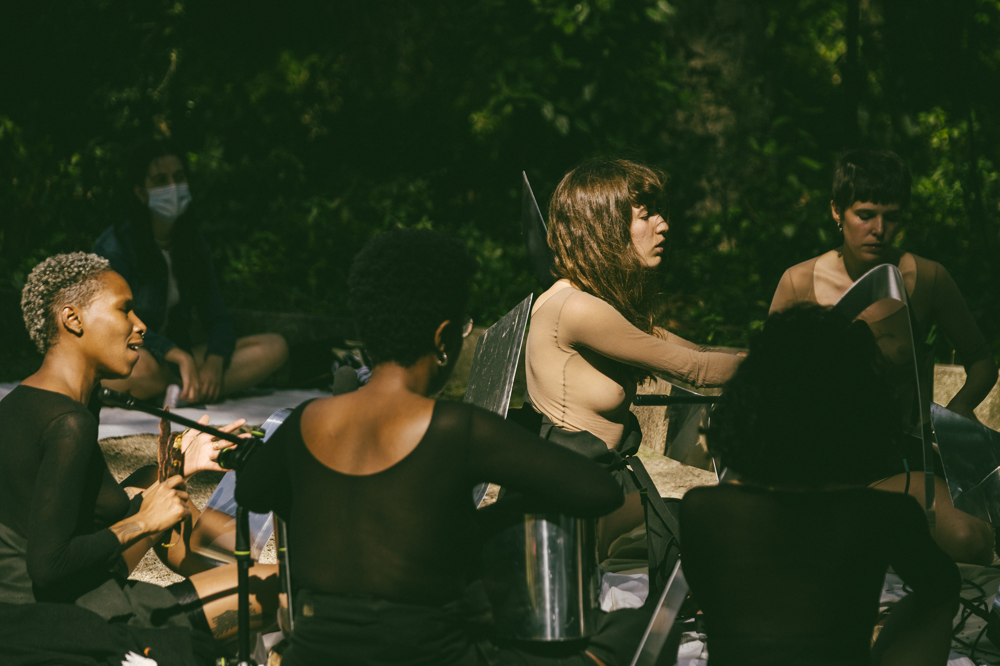
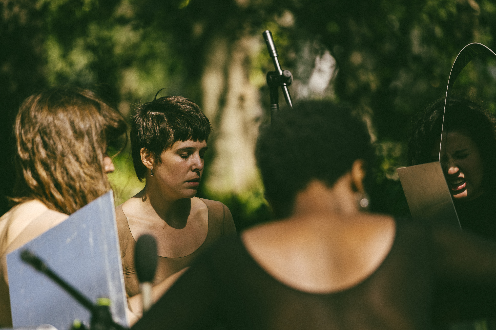
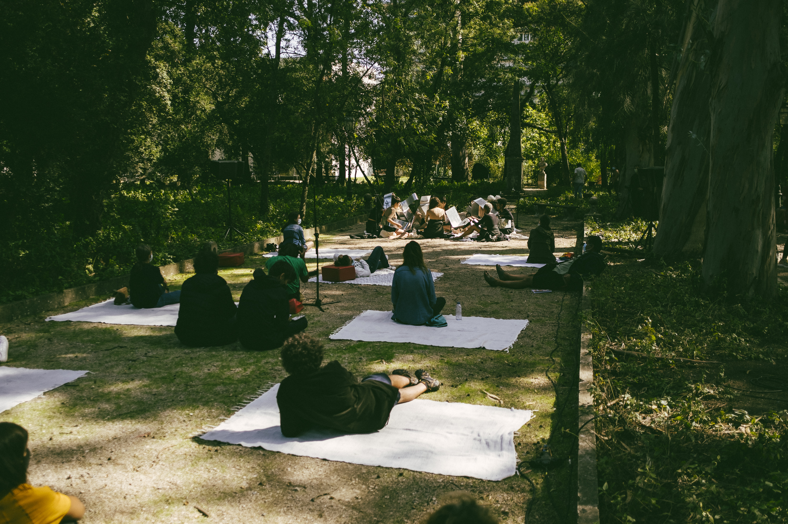
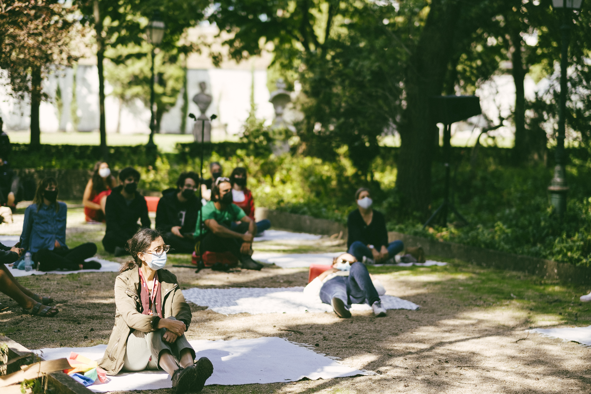

Organismus Kathársis II
2020
Organismus Kathársis II was a live performance presented at Museu de Lisboa – Palácio Pimenta, at Lisboa Soa 2020 program,, created by Francisca Marques and Inês Malheiro, in which I was invited to take part as a performer.
Sinopse:
Organismus Kathársis II é uma performance orientada para a purga de toxinas emocionais através da expressão sonora. Tem como objetivo a ativação de um estado energético criado por um conjunto de elementos que compõem o organismus que, com recurso à voz, percussão de instrumentos metálicos e uma série de ritos, atingem um estado de Kathársis colectiva. Enquanto sistema de purga, estrutura-se através de uma entidade coletiva – o organismus – composto por um grupo de 9 mulheres. Enquanto mecanismo de limpeza emocional o Organismus Kathársis torna-se num importante vetor para um sistema sustentável de ecologia emocional, termo que procuramos explorar e firmar enquanto parte fundamental do conceito alargado de ecologia. Propomos assim um ato de comunhão, uma ação espiritual, uma expansão da perceção do espaço interior do corpo e da sua projeção para uma estrutura de suporte sobre a qual lançamos os medos e as frustrações. Um lugar de cura e de permissão.
Synopsis:
Organismus Kathársis II is a performance aimed at purging emotional toxins through sound expression. It aims to activate an energetic state created by a set of elements that make up the organismus that, using the voice, percussion of metallic instruments and a series of rites, reach a collective Kathársis state. As a purge system, it is structured through a collective entity – the organismus – composed of a group of 9 women. As an emotional cleansing mechanism, Organismus Kathársis becomes an important vector for a sustainable system of emotional ecology, a term that we seek to explore and establish as a fundamental part of the broad concept of ecology. We thus propose an act of communion, a spiritual action, an expansion of the perception of the interior space of the body and its projection to a support structure on which we cast fears and frustrations. A place of healing and permission.
Creation
Francisca Marques and Inês Malheiro
With
Adriana João, Catarina Marcos, Lola Rodrigues, Luiza Jimenez, Madlen Pinto, Mariana Castro, Patrícia Campos









Photography: Vera Marmelo